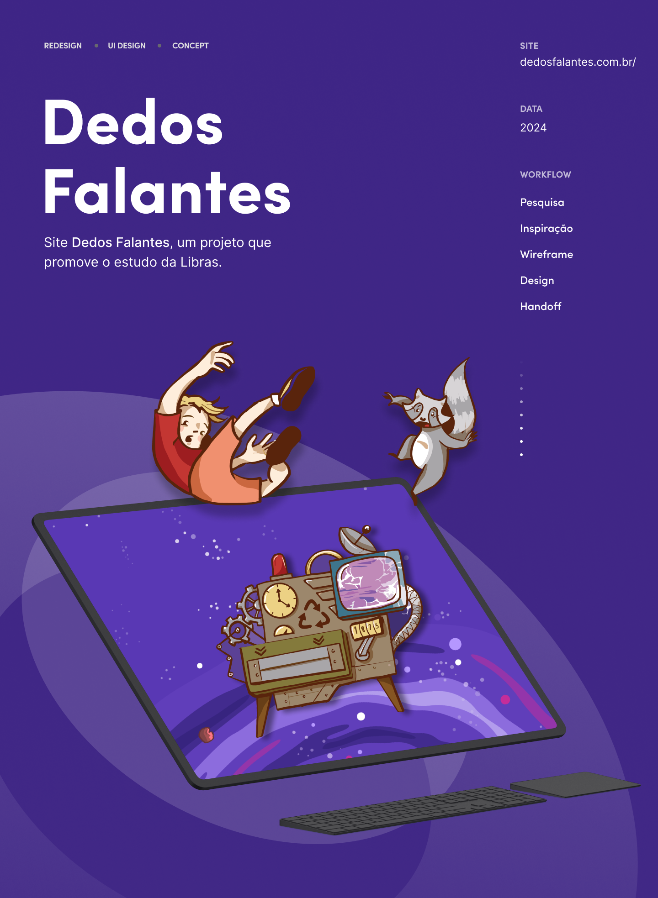
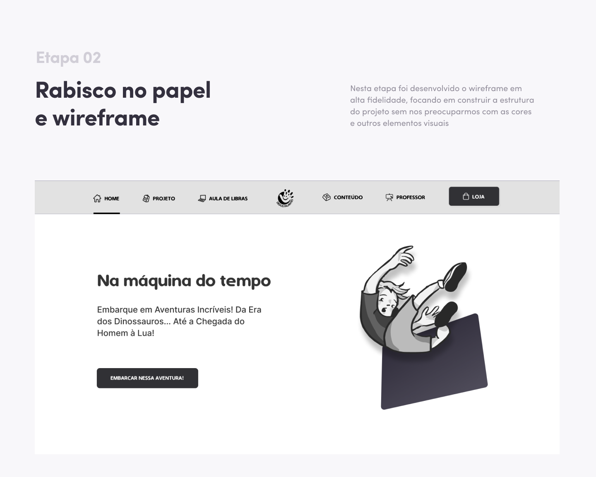
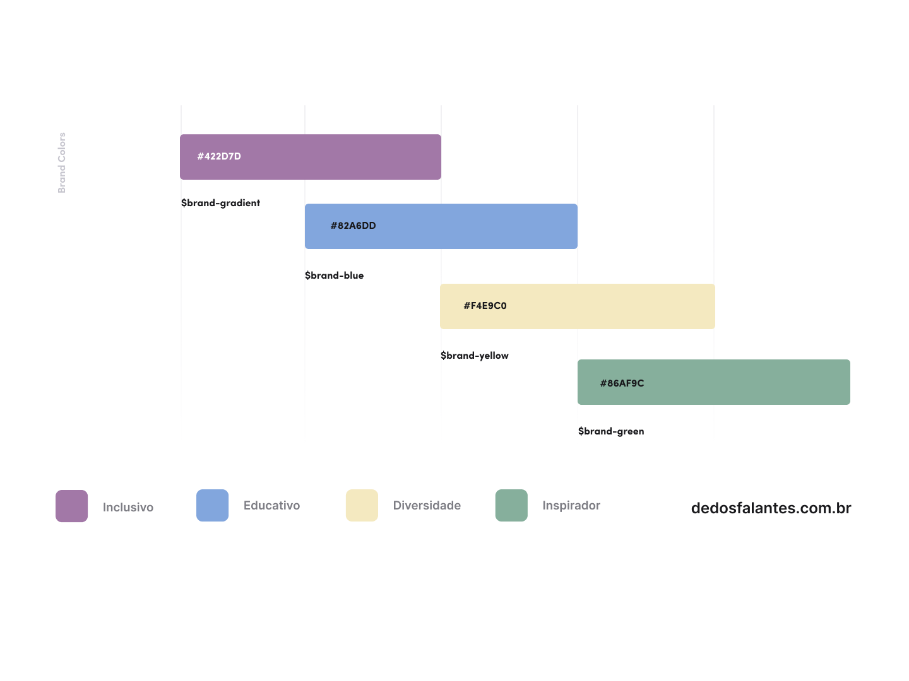
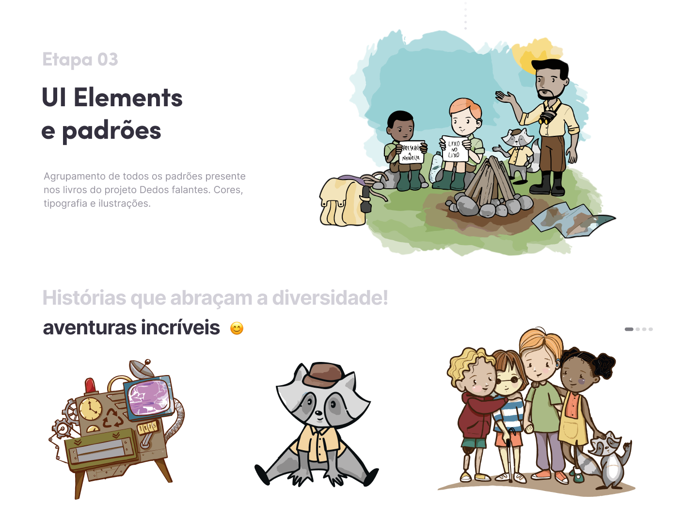
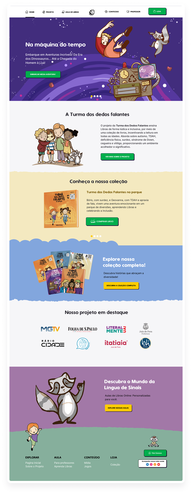
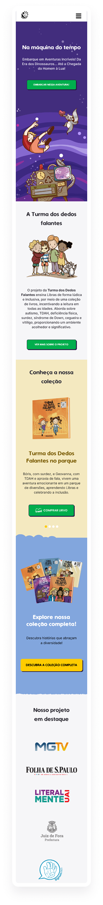

Dedos Falantes
O Dedos Falantes é um projeto que promove o aprendizado de Libras por meio de histórias, personagens e conteúdos educativos.
A proposta de redesign buscou reorganizar a apresentação do site, valorizando seu universo ilustrado e criando uma interface visualmente envolvente para apresentar o projeto, seus livros e suas atividades.

Uma experiência digital para apresentar o universo Dedos Falantes.
O site reúne informações sobre a Turma dos Dedos Falantes, sua coleção de livros, conteúdos educativos e aulas de Libras.
O redesign teve como objetivo organizar esses conteúdos em uma experiência visual mais clara, mantendo a linguagem lúdica e ilustrada que caracteriza o projeto.
A proposta buscou equilibrar informação, ilustração e navegação para apresentar as diferentes áreas do site de maneira consistente.
Das referências à organização da interface.
O processo começou com a busca por referências visuais de sites relacionados ao universo infantil e à leitura.
Entre as inspirações, o site Leiturinha se destacou pela maneira como utiliza cores, imagens e composições para apresentar seus conteúdos.
A partir dessas referências, desenvolvi uma proposta de estrutura para o site, definindo a distribuição dos elementos e a organização das informações antes da aplicação das cores e dos demais recursos visuais.


Cores e ilustrações que dão vida às histórias.
A proposta visual utiliza cores, personagens e ilustrações presentes no universo Dedos Falantes para construir uma interface acolhedora, expressiva e conectada ao conteúdo dos livros.
A combinação desses elementos ajuda a criar uma experiência visual consistente entre as diferentes seções do site.


Uma interface que conecta histórias, conteúdos e aprendizado.
A interface final organiza a apresentação do projeto, a coleção de livros, os conteúdos educativos e as aulas de Libras em seções com identidade visual própria.
As ilustrações, as cores e os elementos gráficos foram utilizados para criar continuidade visual entre as áreas do site, preservando o caráter lúdico do projeto.
A proposta também contempla diferentes tamanhos de tela, com versões para desktop e dispositivos móveis.



Um redesign que valoriza o universo Dedos Falantes.
O projeto reuniu organização de conteúdo e design de interface em uma proposta visual conectada ao universo ilustrado do Dedos Falantes.
O resultado foi uma nova apresentação do site, com atenção à hierarquia das informações, à consistência visual e à adaptação para diferentes dispositivos.